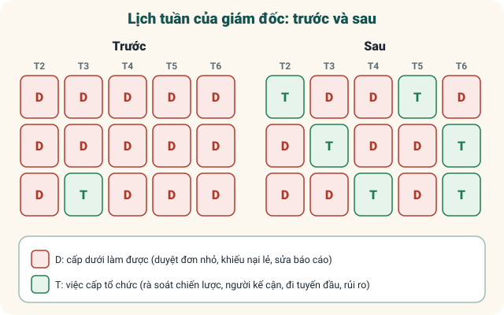

K9 · Lãnh đạo và phát triển người khác › Bậc 5 Dẫn dắt
Từ quản lý đội đến lãnh đạo tổ chức
Bài này làm Tờ 1: Lịch điều hành. Mẫu in. Khóa này nối tiếp khóa N5. Nếu chưa học, xem trước Từ chuyên viên thành quản lý.
1. Mục tiêu
- Phân loại việc trong một tuần thành việc cấp dưới làm được và việc cấp tổ chức.
- Lập Lịch điều hành 4 tuần với khung giờ cố định cho việc cấp tổ chức.
2. Khởi động truy xuất
Hai câu ôn từ khóa N5.
- Ba cột của Bản chuyển vai là gì?
- Danh sách không làm gồm những loại việc nào?
Đáp án
- Buông, giữ, mới.
- Việc dừng, việc hoãn, và lời báo cấp trên kèm lý do.
Xem lại: Bản đồ khóa N5.
3. Giải thích
Lên quản lý, bạn chuyển từ làm việc sang dẫn một đội. Lên cấp điều hành, bạn chuyển thêm một lần nữa. Giờ bạn dẫn một hệ thống: nhiều đội, nhiều cấp quản lý, nhiều khối.
Ba thay đổi lớn.
- Từ giải việc sang thiết kế cách việc được giải. Bạn ít khi tự xử lý sự cố. Bạn sửa cơ cấu, quy trình, quyền quyết định để sự cố ít lặp lại.
- Từ kết quả của đội sang kết quả của tổ chức. Khối của bạn thắng mà công ty thua thì vẫn là thua.
- Từ thông tin trực tiếp sang thông tin qua nhiều lớp. Tin đến tay bạn đã được lọc. Bạn phải chủ động tìm tin thật.
Việc chỉ cấp điều hành làm được. Nếu bạn không làm, thường không ai làm:
- Chọn ưu tiên và chọn việc không làm cho cả tổ chức.
- Phân bổ người và tiền giữa các khối.
- Thiết kế cơ cấu và quyền quyết định.
- Chuẩn bị người kế cận cho vị trí then chốt.
- Giữ quan hệ với hội đồng quản trị, đối tác lớn, cơ quan quản lý.
- Theo dõi rủi ro lớn của tổ chức.

Cái bẫy "kéo xuống". Có sự cố, bạn nhảy vào xử lý thay cấp dưới. Việc xong nhanh, nhưng cấp dưới không lớn lên. Việc cấp tổ chức lại bị bỏ trống.
Tờ 1. Lịch điều hành, 3 bước
- Ghi lại một tuần thậtMỗi việc chiếm từ 30 phút trở lên.
- Gắn nhãnD: cấp dưới làm được. T: việc cấp tổ chức.
- Chặn lịch 4 tuầnKhung giờ cố định cho việc T. Việc D giao cho ai, khi nào.
Tỷ lệ việc T bao nhiêu là đủ? Chưa có con số chuẩn cho mọi tổ chức. Hãy tự đặt mục tiêu, đo lại sau 4 tuần, rồi chỉnh.
4. Ví dụ tại nơi làm việc Việt Nam
Tình huống giả định. Anh Quân là giám đốc vận hành của một chuỗi 40 cửa hàng bánh tại TP.HCM. Dưới anh có 4 quản lý vùng.
Anh ghi lại một tuần. Anh tự duyệt mọi đơn mua trên 5 triệu đồng. Anh gọi trực tiếp cho cửa hàng có khiếu nại. Anh sửa báo cáo tuần của từng vùng.
Anh gắn nhãn. Hầu hết là việc D. Việc T duy nhất là một buổi họp với giám đốc tài chính.
Anh lập Tờ 1. Giao đi: đơn dưới 30 triệu do quản lý vùng duyệt; khiếu nại do vùng xử lý, báo anh trường hợp nghiêm trọng. Khung T: sáng thứ Hai rà soát chỉ số; chiều thứ Tư gặp 2 người kế cận; thứ Sáu đi 2 cửa hàng, không báo trước.
Sau 4 tuần, việc T tăng từ khoảng một phần mười lên gần một phần ba lịch. Hai quản lý vùng tự xử lý được nhiều hơn.
Vì sao cách này tốt: anh không chỉ giao bớt việc. Anh dùng thời gian lấy lại cho việc chỉ anh làm được. Anh đo lại sau 4 tuần.
5. Thực hành
Tình huống giả định. Chị Hạnh là giám đốc một nhà máy may 1.200 công nhân tại Bình Dương. Tuần qua chị làm các việc sau.
a) Kiểm tra từng lô hàng xuất. b) Họp với khách hàng lớn về đơn hàng năm sau. c) Xếp ca cho tổ cắt. d) Xem lại cơ cấu phòng kế hoạch đang chậm. e) Gặp trưởng phòng QA để chọn người kế cận. f) Duyệt mua kim chỉ.
Gắn nhãn D hoặc T. Với mỗi việc D, ghi giao cho ai.
Gợi ý 1
Hỏi: nếu chị không làm việc này, có ai khác đủ thẩm quyền và thông tin để làm không?
Gợi ý 2
Việc D vẫn có thể cần chị theo dõi. Hãy ghi kèm ngưỡng: khi nào thì báo chị.
Lời giải mẫu
- D: a) giao QA, báo chị khi lô lỗi vượt ngưỡng; c) giao quản đốc xưởng cắt; f) giao phòng mua hàng theo hạn mức.
- T: b) quan hệ khách hàng lớn; d) thiết kế tổ chức; e) kế nhiệm.
- Khung T gợi ý: sáng thứ Ba gặp khách hoặc đối tác; chiều thứ Năm làm việc về cơ cấu và người kế cận.
(Thông tin là giả định.)
6. Tự kiểm tra
Chọn đáp án. Mỗi lựa chọn đều có giải thích.
Câu 1. Một kho hàng giao trễ cho khách lớn. Bạn là giám đốc khối. Việc nào là việc cấp tổ chức?
-
Chưa đúng. Đây là việc quản lý kho làm được. Bạn làm thay thì cấp dưới không lớn lên.
-
Đúng. Đúng. Cấp điều hành sửa hệ thống để sự cố ít lặp lại.
-
Chưa đúng. Khách lớn bị ảnh hưởng là rủi ro của tổ chức. Bạn vẫn cần theo dõi và sửa nguyên nhân.
Câu 2. Khối của bạn vượt chỉ tiêu, nhưng nhờ đẩy chi phí sang khối khác. Đánh giá thế nào?
-
Chưa đúng. Ở cấp điều hành, kết quả được tính cho cả tổ chức. Chuyển chi phí đi không tạo thêm giá trị.
-
Đúng. Đúng. Khối thắng mà công ty thua thì vẫn là thua.
-
Chưa đúng. Im lặng không có nghĩa là không có thiệt hại. Thông tin ở cấp cao thường đã bị lọc.
Câu 3. Bạn gắn nhãn D cho việc duyệt đơn mua nhỏ. Bước tiếp theo đúng là gì?
-
Chưa đúng. Không giao rõ thì việc rơi vào khoảng trống. Người khác không biết mình được quyết.
-
Đúng. Đúng. Việc D cần người nhận, phạm vi quyền và điểm báo lại.
-
Chưa đúng. Làm nhanh hơn vẫn chiếm thời gian của việc cấp tổ chức.
Câu 4. Sau 4 tuần dùng Lịch điều hành, việc T vẫn hay bị chiếm chỗ. Nên làm gì?
-
Chưa đúng. Bị chiếm chỗ là dữ liệu để học. Bỏ công cụ thì mất luôn cách đo.
-
Đúng. Đúng. Đo lại rồi chỉnh là cách dùng Tờ 1. Không có tỷ lệ chuẩn cho mọi nơi.
-
Chưa đúng. Cách này không giải quyết nguyên nhân. Việc D vẫn chiếm giờ làm chính.
7. Phản tư
- Tuần qua, việc nào bạn "kéo xuống" làm thay cấp dưới? Vì sao?
- Việc cấp tổ chức nào đang không có ai làm?
8. Áp dụng thật
Trong 7 ngày tới, ghi lại một tuần làm việc thật và gắn nhãn D hoặc T. Chặn ít nhất hai khung giờ cố định cho việc T trong 4 tuần tới.
Mức bằng chứng. Bài dựa trên mô tả năng lực cấp điều hành trong các khung công khai: UK Civil Service Success Profiles, APS Integrated Leadership System. Tờ 1 là công cụ do site đề xuất. Site chưa tìm thấy nghiên cứu nào xác định tỷ lệ thời gian tối ưu.
9. Siêu dữ liệu
| skill | K9 · Lãnh đạo và phát triển người khác |
|---|---|
| level | Bậc 5 · Dẫn dắt |
| group | N6 |
| framework_map | UK Civil Service Success Profiles: Seeing the Big Picture; Leadership; APS Integrated Leadership System: Shapes strategic thinking; WEF: Leadership and social influence; SkillsFuture CCS: Developing People (chỉ dẫn chiếu) |
| updated | 2026-11-14 |
Hoàn thành bài
Đánh dấu đã học để site gợi ý lịch ôn sau 1, 3 và 7 ngày. Dữ liệu chỉ lưu trên máy của bạn.
Lịch ôn gợi ý: